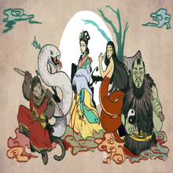

Ελληνική Μυθολογία

Ο όρος ελληνική μυθολογία καλύπτει το σύνολο των μύθων και των διδαχών που σχετίζονται με την αρχαία ελληνική παράδοση, έτσι όπως παρουσιάζονται στα κείμενα της
αρχαίας ελληνικής γραμματείας.Ως ελληνική μυθολογία ορίζεται συγκεκριμένα η αφήγηση των μυθικών ιστορημάτων που δημιουργήθηκαν από τους αρχαίους Έλληνες και αφορούσαν
τους θεούς του Ολύμπου και τους ήρωες, τη φύση του κόσμου και τις τελετουργικές πρακτικές της λατρείας τους.Οι σύγχρονοι ερευνητές αναφέρονται στους μύθους και τους
μελετούν για να κατανοήσουν τον συμβολισμό τους, τους θρησκευτικούς και πολιτικούς θεσμούς των αρχαίων Ελλήνων και γενικά τον αρχαίο ελληνικό πολιτισμό.
Οι χρονολογικά μεταγενέστεροι ελληνικοί μύθοι εντάσσονται στον χώρο της λαογραφίας και δεν αφορούν τη μυθολογία με την καθ'εαυτού στενή έννοια του όρου.
Η ελληνική μυθολογία συνίσταται σε μια πλούσια συλλογή αφηγημάτων που αναφέρονται στην προέλευση του κόσμου και εξιστορούν την ζωή και τις περιπέτειες μιας ευρείας
ποικιλίας θεών, ηρώων, ηρωίδων και άλλων μυθολογικών πλασμάτων. Αυτές οι ιστορίες αρχικά διαμορφώθηκαν μέσω της προφορικής και ποιητικής παράδοσης, πριν να διαδοθούν
γραπτώς μέσα από τα έργα της ελληνικής λογοτεχνίας.
Link για τα μαθήματα!
Τα μαθήματα της Ελληνικής Μυθολογίας
Σκανδιναβική Μυθολογία

Ο όρος σκανδιναβική μυθολογία, ή μυθολογία των Βίκινγκ συνδέεται με την προχριστιανική θρησκεία, τους μύθους και τις δοξασίες των Σκανδιναβών και περιλαμβάνει εκείνες τις
φυλές που εγκαταστάθηκαν στην Ισλανδία, όπου συγκεντρώθηκαν οι γραπτές πηγές για το μυθολογικό υλικό. Είναι η γνωστότερη εκδοχή της αρχαιότερης κοινής γερμανικής μυθολογίας,
η οποία περιλαμβάνει επίσης την σχετική αγγλοσαξονική μυθολογία. Η γερμανική μυθολογία με τη σειρά της αναπτύχθηκε από μία αρχαιότερη ινδοευρωπαϊκή θρησκεία με ανάλογο
μυθολογικό υλικό.Η σκανδιναβική μυθολογία είναι μια συλλογή πίστεων και μύθων που τις μοιράζονταν από κοινού οι βόρειες γερμανικές φυλές και όχι κάποια αποκαλυπτική θρησκεία,
από την άποψη ότι δεν υπάρχει κάποιος ισχυρισμός θεοπνευστίας στα ιερά τους κείμενα. Το μυθολογικό υλικό μεταβιβαζόταν προφορικά στο μεγαλύτερο τμήμα της εποχής των Βίκινγκ.
Η γνώση μας για αυτή την περίοδο βασίζεται κυρίως στις Έντα και άλλα μεσαιωνικά κείμενα γραμμένα μετά των εκχριστιανισμό των βόρειων λαών. Στη σκανδιναβική παράδοση
οι αρχαίες πίστεις διατηρήθηκαν επί μακρόν στις μη αστικές περιοχές, όπου ορισμένες παραδόσεις επιβιώνουν ακόμη και σήμερα, ιδιαίτερα στο νεοπαγανιστικό κίνημα Άσατρου και
τον Οντινισμό. Στα βόρεια πλάτη η σκανδιναβική μυθολογία είναι σημαντικός παράγων λογοτεχνικής έμπνευσης, θεατρικής και κινηματογραφικής παραγωγής.
Link για τα μαθήματα!
Το μάθημα της Σκανδιναβικής Μυθολογίας
Κινέζικη Μυθολογία

Η κινεζική μυθολογία (απλοποιημένα κινέζικα :中国 神话; παραδοσιακά κινέζικα:中國 神話; pinyin : Zhōngguó shénhuà ) είναι μυθολογία που έχει περάσει σε προφορική μορφή ή
έχει καταγραφεί στη λογοτεχνία στη γεωγραφική περιοχή που είναι τώρα γνωστή ως "Κίνα". Η κινεζική μυθολογία περιλαμβάνει πολλούς διαφορετικούς μύθους από περιφερειακές
και πολιτιστικές παραδόσεις. Μεγάλο μέρος της μυθολογίας περιλαμβάνει συναρπαστικές ιστορίες γεμάτες φανταστικούς ανθρώπους και όντα, καθώς και ρήση μαγικών δυνάμεων,
που συχνά λαμβάνουν χώρα σε εξωτικό μυθολογικό τόπο ή χρόνο. Όπως πολλές μυθολογίες, η κινεζική μυθολογία πιστεύεται ότι στο παρελθόν ήταν, τουλάχιστον εν μέρει,
μια πραγματική καταγραφή της ιστορίας. Μαζί με την κινεζική λαογραφία, η κινεζική μυθολογία αποτελεί σημαντικό μέρος της κινεζικής λαϊκής θρησκείας.[1] Πολλές ιστορίες
σχετικά με χαρακτήρες και γεγονότα του μακρινού παρελθόντος έχουν μια διπλή παράδοση: αυτές που παρουσιάζουν μια πιο ιστοριοποιημένη ή ευχαρίστη εκδοχή και αυτές που
παρουσιάζουν μια πιο μυθολογική εκδοχή.
Link για τα μαθήματα!
Το μάθημα της Κινέζικης Μυθολογίας
Αραβική Μυθολογία

Η αραβική μυθολογία περιλαμβάνει τις αρχαίες πεποιθήσεις των Αράβων, οι οποίες συγχρωτίστηκαν με το Ισλάμ και είτε έδωσαν τη θέση τους είτε μετουσιώθηκαν σε νέους μύθους.
Πριν την έλευση και εξάπλωση του Ισλάμ στην Αραβική Χερσόνησο το έτος 622, την Εγίρα του ισλαμικού ημερολογίου, το κέντρο της θρησκείας, η Κάαμπα της Μέκκας, δεν αποτελούσε
μονάχα το μοναδικό σύμβολο του Θεού, όπως τώρα, αλλά καλυπτόταν και με σύμβολα που αναπαριστούσαν πληθώρα δαιμόνων, τζίνι και άλλων ημίθεων πλασμάτων, προβάλλοντας έτσι τον
πολυθεϊστικό χαρακτήρα της προϊσλαμικής Αραβίας, από τον οποίο ξεπρόβαλαν σε ένα ευρύ πλαίσιο μύθοι και θρύλοι[1], που επιζούν ως τις μέρες μας. Για παράδειγμα, το κακό μάτι
αναφέρεται στο Κοράνι, στη σούρα "Αλ Φαλάκ", ενώ το Χέρι της Φάτιμα χρησιμοποιείται για να το διώξει[2], αν και απαγορεύεται από το Ισλάμ, όπως και όλα τα φυλαχτά και οι
δεισιδαιμονίες.Ο Πατέρας ο Χουμπάλ (αραβ. هبل) θεωρείται ο κυρίαρχος και πιο σημαντικός θεός. Ειδώλιό του βρέθηκε κοντά στην Κάαμπα, πλασμένο από κόκκινο αγάτη, με
ανθρώπινη μορφή, αλλά το δεξί χέρι σπασμένο, έχοντας αντικατασταθεί από ένα όμοιο χρυσό
Link για τα μαθήματα!
Το μάθημα της Αραβικής Μυθολογίας
Μυθολογία Αζτέκων

Με τον όρο μυθολογία των Αζτέκων εννοείται το συνολικό σώμα μύθων που διαμόρφωσαν τα θρησκευτικά πιστεύω και τις κοινωνικές δομές του πολιτισμού των Αζτέκων. Κυρίαρχη
θέση σε αυτό το πλέγμα των μύθων έχει ο ιδρυτικός μύθος και το πάνθεον των Αζτέκων, έτσι όπως διαμορφώθηκε κατά την περίοδο ίδρυσης της αυτοκρατορίας.Η ίδρυση του κράτους
των Αζτέκων αρχίζει με τον μύθο του Ουιτζιλοπότστλι. Αντλώντας από τον μύθο των πέντε ηλίων και τους μεσοαμερικανικούς μύθους της δημιουργίας, γνωστούς στην ευρύτερη
επικράτεια του Μεξικού οι Αζτέκοι δημιούργησαν τους δικούς τους μύθους, οι οποίοι βρίσκονται μόνο στον δικό τους πολιτισμό. Οι προφητείες και οι αιτιολογίες για την ανάπτυξη
του κράτους των Αζτέκων -κάτι που συμβαίνει σε όλους τους ιδρυτικούς εθνικούς ή φυλετικούς μύθους εμφανίζονται πριν από τη γέννηση της κεντρικής θεότητας, του Ουιτζιλοπότστλι.
Η μητέρα του Ουιτζιλοπότστλι, Κοατλίκουε, (Εκείνη με το φιδίσιο ένδυμα), τελούσε το ιερό καθήκον της στο όρος του Ερπετού, κοντά στην Τούλα, μαζεύοντας έναν θύσανο φτερών,
όταν ανακάλυψε ότι ήταν έγκυος. Οι τετρακόσιοι γιοι και η κόρη της Κογιολξάουκι θύμωσαν και αποφάσισαν να τη σκοτώσουν. Διαμόρφωσαν λοιπόν μια στρατιά την οποία οδηγούσε
η Κογιολξάουκι και επιτέθηκαν. Τότε γεννήθηκε σε μια στιγμή ο Ουιτζιλοπότστλι, πλήρως ανεπτυγμένος, πλήρως οπλισμένος, με ασπίδα και λόγχη. Έφερε πύρινο σκήπτρο με κεφαλή
φιδιού και με αυτό επιτέθηκε στην αδελφή του, τεμαχίζοντας το σώμα της. Κατόπιν επιτέθηκε στον υπόλοιπο στρατό, σκοτώνοντας και διασκορπίζοντας τους αδελφούς του. Με αυτόν
τον τρόπο ο νεογέννητος έγινε καθοδηγητής των Μεσίκα στο μακρύ ταξίδι τους για μόνιμη εγκατάσταση. Οι Μεσίκα με δυσκολίες και περιπέτειες έφτασαν στον τόπο που ονομαζόταν
Τενοτστιτλάν. Εκεί ο θεός εμφανίστηκε στα όνειρα ιερέων για να τους καθοδηγήσει στην επιλογή του τόπου. Φθάνοντας στην ελώδη γη μια λίμνης ακολούθησαν τους οιωνούς, έναν αητό
που έτρωγε φίδι, και εγκατέστησαν εκεί την πρωτεύουσα της αυτοκρατορίας τους.
Link για τα μαθήματα!
Το μάθημα της Μυθολογίας Αζτέκων